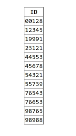
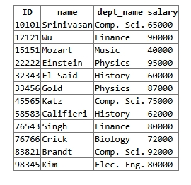
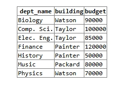
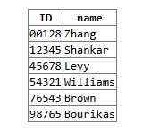
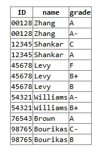
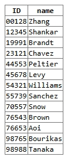
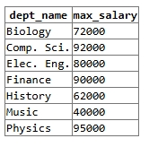
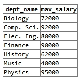
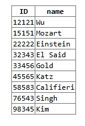
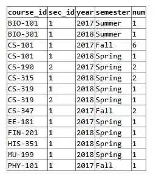

Assignment 3 – EPPS 6354
Question 2: Write a SQL codes to get a list of:
2(i) Student IDs
SQL Code
SELECT DISTINCT id
FROM takes;Result

Explanation
This query retrieves all student IDs from the takes relation.
The DISTINCT keyword ensures that each student ID appears only once, even if a student has taken multiple courses.
2(ii) Instructors
SQL Code
SELECT *
FROM instructor;Result

Explanation
This query retrieves all columns from the instructor table, including instructor ID, name, department name, and salary.
The asterisk (*) selects all available attributes in the relation.
2(iii) Departments
SQL Code
SELECT *
FROM department;Result

Explanation
This query retrieves all departments from the department relation, including department name, building location, and budget.
The query displays the full structure of the department table.
Question 3: Write in SQL codes to do following queries:
3(i) Students’ IDs and Names Who Have Taken at Least One Comp. Sci. Course
SQL Code
SELECT DISTINCT s.id, s.name
FROM student s
JOIN takes t ON s.id = t.id
JOIN course c ON t.course_id = c.course_id
WHERE c.dept_name = 'Comp. Sci.';Result

Explanation
This query retrieves the ID and name of students who have taken at least one course offered by the Computer Science department.
The query joins three relations: - student to obtain student names, - takes to identify courses taken, - course to determine the department offering the course.
The DISTINCT keyword ensures that duplicate student names do not appear in the result.
3(ii) Add Grades to the List
SQL Code
SELECT DISTINCT s.id, s.name, t.grade
FROM student s
JOIN takes t ON s.id = t.id
JOIN course c ON t.course_id = c.course_id
WHERE c.dept_name = 'Comp. Sci.';Result

Explanation
This query extends the previous result by including the grade each student received in the Computer Science course.
The grade attribute comes from the takes relation.
3(iii) Find IDs and Names of Students Who Have Not Taken Any Course Offered Before 2017
SQL Code
SELECT s.id, s.name
FROM student s
WHERE s.id NOT IN (
SELECT t.id
FROM takes t
WHERE t.year < 2017
);Result

Explanation
This query retrieves students who have never taken a course offered before 2017.
The subquery selects student IDs for courses taken before 2017, and the outer query excludes those students using NOT IN.
3(iv) Maximum Salary of instructor per Department
SQL Code
SELECT dept_name, MAX(salary) AS max_salary
FROM instructor
GROUP BY dept_name;Result

Explanation
This query groups instructors by department and calculates the highest salary within each department using the MAX() aggregation function.
3(v) Lowest of the Department Maximum Salaries
SQL Code
SELECT MIN(max_salary)
FROM (
SELECT MAX(salary) AS max_salary
FROM instructor
GROUP BY dept_name
) AS dept_max;Result

Explanation
This query first computes the maximum salary for each department and then selects the smallest value among those maximum salaries using MIN().
3(vi) Department Names with Maximum Salaries
SQL Code
SELECT dept_name, MAX(salary) AS max_salary
FROM instructor
GROUP BY dept_name;Result

Explanation
This query displays each department alongside its maximum instructor salary.
The GROUP BY clause ensures that salaries are aggregated per department.
Question 4: Instructors Who Have Never Given an ‘A’ Grade in any course
SQL Code
SELECT i.id, i.name
FROM instructor i
WHERE i.id NOT IN (
SELECT te.id
FROM teaches te
JOIN takes t
ON te.course_id = t.course_id
AND te.sec_id = t.sec_id
AND te.semester = t.semester
AND te.year = t.year
WHERE t.grade = 'A'
);Result

Explanation
This query retrieves instructors who have never given an ‘A’ grade in any course they have taught.
The subquery identifies instructors who have given at least one ‘A’ by joining: - the teaches relation (which links instructors to sections taught), and
- the takes relation (which contains student grades).
The join conditions ensure that the instructor is matched to the exact section where the grade was awarded.
The outer query then excludes those instructors using the NOT IN condition.
As a result, the output includes instructors who have never awarded an ‘A’, as well as instructors who have never taught any course.
Question 5: Number of Students in Each Section
SQL Code
SELECT course_id,
sec_id,
year,
semester,
COUNT(id) AS num
FROM takes
GROUP BY course_id, sec_id, year, semester;Result

Explanation
This query calculates the number of students enrolled in each course section.
The takes relation contains one record per student enrollment.
By grouping the records using GROUP BY course_id, sec_id, year, semester, the query aggregates students by section.
The COUNT(id) function counts the number of students in each group, and the result is labeled as num.
Sections with zero students are not included because only existing enrollments in the takes relation are counted.